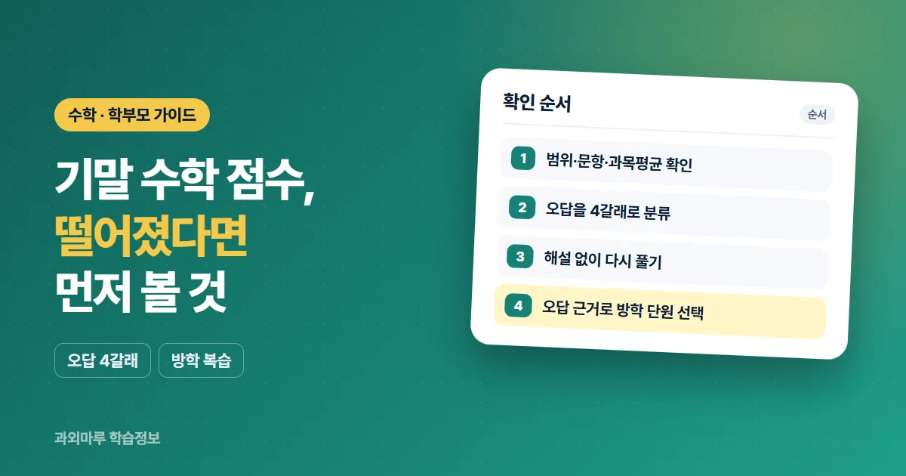

- 원점수만 비교하지 말고 시험 범위·문항 구성·과목평균을 함께 봅니다.
- 오답은 개념 / 풀이 시작 / 계산·조건 / 시간 네 갈래로 나눠 원인을 확인합니다.
- 겨울방학 복습 단원은 오답이 모인 단원을 근거로 고릅니다.
기말고사 수학 점수가 떨어지면 실력이 떨어진 걸까요?
점수가 떨어졌다는 사실만으로 실력이 떨어졌다고 단정하기는 어렵습니다. 중간고사와 기말고사는 서로 다른 시험이어서, 범위와 난도, 문항 구성이 달라지면 같은 학생이라도 원점수가 달라질 수 있습니다.
원점수는 학생이 실제로 받은 점수, 과목평균은 같은 과목을 본 학생들의 평균 점수를 말합니다. 아래는 원점수와 과목평균을 함께 볼 때의 차이를 보여 주는 가상 예시입니다.
| 구분 (가상 예시) | 원점수 | 과목평균 | 평균과의 차이 |
|---|---|---|---|
| 중간고사 | 82점 | 70점 | +12점 |
| 기말고사 | 74점 | 58점 | +16점 |
이 예시에서는 원점수가 8점 낮아졌지만 평균과의 차이는 오히려 커졌습니다. 다만 표준편차나 수강자수 같은 다른 정보 없이 평균만으로 위치를 확정할 수는 없으므로, "떨어졌다" 또는 "괜찮다"를 판단하기 전에 시험의 조건을 먼저 확인하는 것이 좋습니다. 성적표의 숫자를 읽는 방법은 중간고사 성적표 보는 법에 정리해 두었습니다.
점수를 비교하기 전에 무엇을 확인해야 하나요?
시험 범위, 문항 구성, 학교가 안내한 과목평균 세 가지를 먼저 확인합니다. 이 정보가 있어야 점수 변화가 시험의 차이 때문인지, 학생의 이해 정도 때문인지 나눠 볼 수 있습니다.
- 시험 범위 — 기말고사 범위에 새로 배운 단원이 몇 개였는지, 중간고사 범위가 함께 들어갔는지 확인합니다.
- 문항 구성 — 객관식과 서술형의 비중, 문항 수, 배점이 중간고사와 같았는지 봅니다.
- 과목평균 등 학교 안내 — 학교가 알려 준 과목평균이나 성취도 정보를 원점수와 함께 봅니다.
- 학기 성적 반영 — 지필평가와 수행평가가 어떻게 합산되는지 학교의 평가 계획을 확인합니다.
고등학교는 2025학년도 1학년부터 학교생활기록부 과목 성적에 원점수와 과목평균, 성취도(수강자수), 성취도별 분포비율, 석차등급(1~5)이 함께 기재됩니다. 중학교 성적표의 항목은 학교 안내를 확인해 주세요.
틀린 수학 문제는 어떻게 나눠 보면 좋을까요?
틀린 문제마다 "어디에서 막혔는지"를 개념 이해, 적용과 풀이 시작, 계산과 조건 확인, 시간 부족 중 하나로 표시해 보세요. 원인이 다르면 다시 해 볼 활동과 다음 공부도 달라집니다.
| 틀린 문제에서 확인할 것 | 다시 해 볼 활동 | 다음 학습 |
|---|---|---|
| 개념 이해 — 공식이나 정의를 말로 설명하지 못함 | 교과서의 개념 설명을 읽고 예제를 해설 없이 다시 풀기 | 같은 단원의 기본 문제로 개념을 다시 정리 |
| 적용·풀이 시작 — 개념은 아는데 첫 줄을 쓰지 못함 | 문제의 조건을 적고 "어떤 개념을 쓸지" 먼저 말해 보기 | 조건이 조금씩 다른 유형 문제로 풀이 시작 연습 |
| 계산·조건 확인 — 풀이 방향은 맞는데 부호·조건에서 틀림 | 틀린 줄을 찾아 표시하고 같은 문제를 처음부터 다시 계산하기 | 자주 틀리는 실수를 기록하고 검토 순서 정하기 |
| 시간 부족 — 시간이 있으면 풀 수 있었음 | 시간을 재지 않고 다시 풀어 맞히는지 먼저 확인하기 | 문제 순서 정하기, 시간을 재며 한 단원씩 연습 |
한 문제에 원인이 두 가지 이상 겹칠 수도 있습니다. 시험지 한 장 전체를 나눠 보면 어느 원인이 많은지 보이는데, 이 결과도 한 번의 시험에 대한 기록이므로 다음 시험에서 다시 확인합니다. 시험 직후 오답을 정리하는 루틴은 중간고사 끝난 뒤 2주, 시험 결과 분석과 오답 정리법에서도 볼 수 있습니다.
해설 없이 다시 풀어 보면 무엇을 알 수 있나요?
해설을 보지 않고 다시 풀면, 학생이 실제로 막히는 지점이 해설을 읽었을 때와 다르게 드러납니다. 다시 푼 뒤에는 "왜 이렇게 풀었는지"를 말로 설명해 보게 하세요.
- 틀린 문제의 해설과 답을 가린 채 처음부터 다시 풉니다.
- 막힌 줄에 표시하고, 그 줄에서 무엇이 필요했는지 적습니다.
- 다 풀었다면 풀이 순서와 이유를 말로 설명합니다.
- 설명이 막힌 부분만 해설로 확인하고, 며칠 뒤 같은 문제를 다시 풉니다.
다시 푼 결과는 아래처럼 짧게 기록해 두면, 방학에 어떤 단원부터 볼지 정할 때 근거가 됩니다. 표의 문항과 단원은 가상 예시입니다.
| 문항 (가상 예시) | 해설 없이 다시 풀었을 때 | 원인 | 방학에 할 일 |
|---|---|---|---|
| 7번 (일차함수 그래프) | 기울기의 뜻을 설명하지 못함 | 개념 이해 | 교과서 개념부터 다시 정리 |
| 12번 (연립방정식 활용) | 식을 세우지 못하고 멈춤 | 적용·풀이 시작 | 조건을 식으로 바꾸는 연습 |
| 15번 (도형의 넓이) | 다시 풀면 맞힘, 숫자를 옮겨 적다 틀림 | 계산·조건 확인 | 검토 순서 정해 다시 계산 |
| 서술형 2번 | 시간을 재지 않으면 끝까지 풂 | 시간 부족 | 문제 순서 정하기 연습 |
답이 맞았더라도 풀이 이유를 설명하지 못한다면 비슷한 문제에서 다시 막힐 수 있습니다. 반대로 설명은 정확한데 계산에서만 틀렸다면, 개념보다 검토 습관을 먼저 살펴봅니다.
숙제는 잘 해 왔는데 시험에서 틀린다면 무엇을 봐야 할까요?
숙제를 해 낸 것과 처음 보는 문제를 혼자 해결하는 것은 서로 다른 과정일 수 있어 따로 살펴봅니다. 어느 한쪽을 원인으로 단정하기보다, 숙제 문제 일부를 시험처럼 다시 풀어 보며 차이를 확인합니다.
| 살펴볼 점 | 숙제할 때 | 시험에서 |
|---|---|---|
| 풀이 방법 | 바로 앞에서 배운 방법을 이어서 씀 | 어떤 방법을 쓸지 스스로 골라야 함 |
| 도움 | 예제·해설·답지를 볼 수 있음 | 혼자 끝까지 풀어야 함 |
| 문제 순서 | 같은 유형이 모여 있음 | 여러 단원 문제가 섞여 있음 |
| 시간 | 시간 제한이 거의 없음 | 정해진 시간 안에 풀어야 함 |
숙제에서 맞힌 문제 몇 개를 골라 날짜를 두고, 해설 없이 섞어서 다시 풀어 보면 혼자 해결하는 힘을 확인하는 데 도움이 됩니다. 결과는 숙제의 양이나 특정 공부 방식의 좋고 나쁨이 아니라, 다음에 무엇을 연습할지 정하는 자료로 씁니다.
아이와 시험지를 볼 때 어떤 질문을 하면 좋을까요?
"왜 이것밖에 못 했어?"보다 틀린 문제 하나를 함께 보며 어디에서 막혔는지 묻는 질문이 도움이 됩니다. 아이가 스스로 원인을 말할 수 있게 하는 것이 목적입니다.
| 이렇게 묻기보다 | 이렇게 물어보기 |
|---|---|
| "왜 또 틀렸어?" | "이 문제는 어디까지 풀었고, 어디에서 멈췄어?" |
| "공부 안 했지?" | "시험 전에 이 단원은 어떻게 공부했어?" |
| "다음엔 몇 점 받을 거야?" | "방학에 다시 보고 싶은 단원은 어디야?" |
| "실수 좀 하지 마." | "이 실수는 전에도 비슷한 적이 있었어?" |
점수에 대한 평가는 잠시 미뤄 두고, 아이가 설명한 원인을 앞의 네 갈래 표에 함께 표시해 보세요. 다른 학생이나 형제와 비교하는 말은 원인을 찾는 데 도움이 되지 않습니다.
겨울방학에는 어떤 수학 단원을 복습하면 좋을까요?
오답이 많이 모인 단원, 그중에서도 개념 이해와 풀이 시작에서 막힌 단원을 먼저 고릅니다. 다음 학년 내용이 앞 단원을 바탕으로 이어지는 경우가 많아, 이런 빈틈을 먼저 채우는 편이 이후 공부에 부담이 적습니다.
| 혼자 복습하기 좋은 부분 | 설명·피드백이 있으면 좋은 부분 |
|---|---|
| 계산·조건 확인에서 틀린 문제 다시 계산하기 | 개념을 읽어도 왜 그런지 설명하지 못할 때 |
| 교과서 예제를 해설 없이 다시 풀기 | 풀이 첫 줄을 어떻게 시작할지 계속 막힐 때 |
| 자주 하는 실수 기록과 검토 순서 지키기 | 여러 단원이 섞인 문제에서 개념을 고르지 못할 때 |
방학 동안 복습과 다음 학년 준비의 순서는 중학생 겨울방학 수학 공부, 선행학습보다 복습이 먼저인 경우는?를 참고해 주세요. 방학 중 1:1 수업의 상담 내용과 진행 방식은 겨울방학 과외 안내에서 볼 수 있습니다.
1:1 수업에서는 일반적으로 기말고사 시험지와 오답을 먼저 함께 보고, 원인이 모인 단원부터 복습 순서를 정하는 방식으로 진행하는 경우가 많습니다.
자주 묻는 질문
중간고사보다 기말고사 수학 점수가 낮으면 성적이 떨어진 건가요?
원점수만으로는 단정하기 어렵습니다. 두 시험은 범위와 문항 구성, 과목평균이 다를 수 있으므로 평균과의 차이와 시험 조건을 함께 확인한 뒤 판단하는 것이 좋습니다.
기말고사 수학 점수가 떨어졌을 때 학부모는 무엇부터 확인하나요?
시험 범위, 문항 구성, 학교가 안내한 과목평균을 먼저 확인합니다. 그다음 틀린 문제를 함께 보며 개념 이해, 적용과 풀이 시작, 계산과 조건 확인, 시간 부족 중 어디에서 막혔는지 나눠 봅니다.
수학 오답은 어떻게 분류하나요?
틀린 문제마다 공식이나 정의를 설명하지 못했는지, 풀이 첫 줄을 쓰지 못했는지, 계산이나 조건에서 틀렸는지, 시간이 부족했는지를 표시합니다. 원인에 따라 다시 해 볼 활동과 다음 공부가 달라집니다.
숙제는 다 하는데 수학 시험 점수가 기대보다 낮은 이유는 무엇인가요?
숙제는 예제와 해설을 보며 같은 유형을 이어서 푸는 경우가 많고, 시험은 여러 단원 문제를 혼자 정해진 시간 안에 풀어야 해서 과정이 다를 수 있습니다. 숙제 문제 일부를 날짜를 두고 해설 없이 섞어 다시 풀어 보면 차이를 확인하는 데 도움이 됩니다.
겨울방학 수학 복습 단원은 어떻게 고르나요?
기말고사 오답이 많이 모인 단원, 특히 개념 이해와 풀이 시작에서 막힌 단원을 먼저 고릅니다. 계산 실수가 많은 단원은 혼자 다시 계산하며 검토 순서를 지키는 연습부터 할 수 있습니다.
참고 자료
- 고교학점제 지원센터, 「성적 산출·기록·제공」 — https://www.hscredit.kr/about/grade
이 글은 일반적인 참고 정보이며, 표의 점수는 설명을 위한 가상 예시입니다. 시험 범위와 성적표 항목, 평가 반영 비율은 학교와 학년에 따라 다르므로 학교 안내를 확인해 주세요.
학년과 최근 시험지·오답, 방학 중 가능한 시간을 남겨주시면 상담 내용을 확인해 안내드립니다.